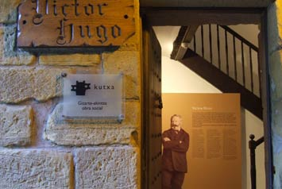
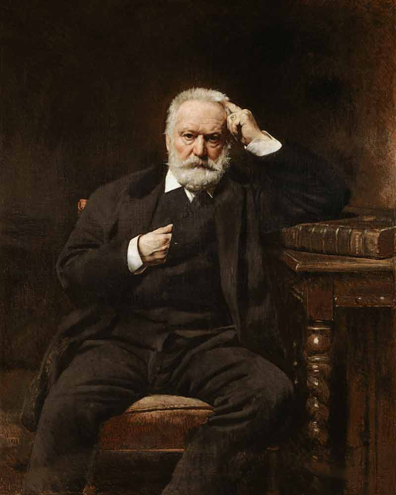
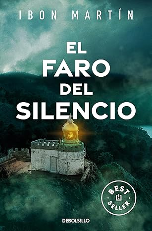
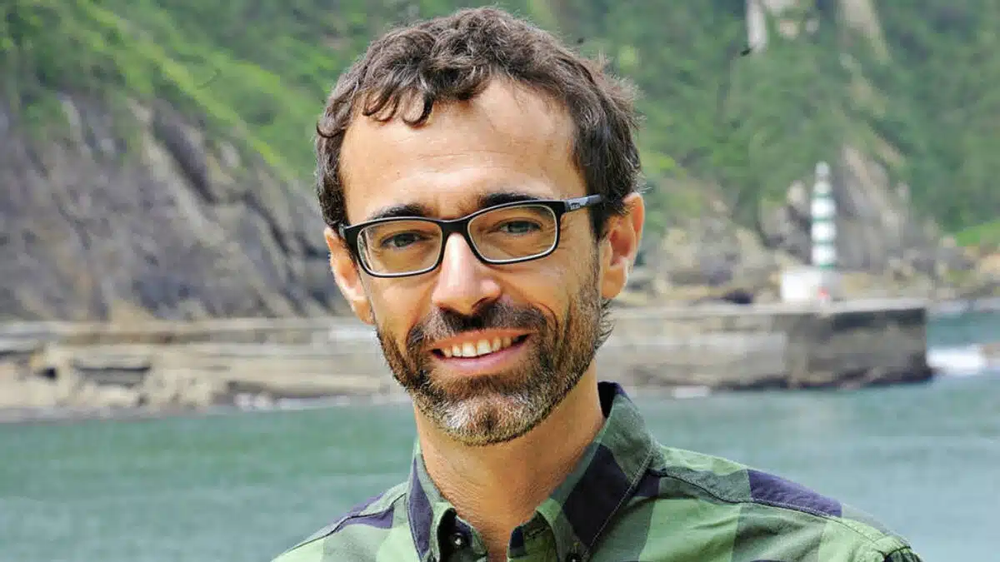

Literatura
Casa de Victor Hugo
Victor Hugo refiriendose a Donibane: «Calle única, que siempre te lleva a donde quieras ir…»
Poeta, dramaturgo, ensayista, novelista, crítico, político, dibujante y pintor, Victor Hugo, nacido en Besançon, el 26 de febrero de 1802, «cuando el siglo tenía dos años…» es quizá el máximo exponente de la literatura francesa y del romanticismo universal del siglo XIX.
Hugo es uno de los pocos talentos reconocidos en vida, y así lo demostraron los dos millones de personas que asistieron a su funeral, el 22 de mayo de 1885.
Retrato de Victor Hugo realizado por Léon Bonnat
El verano de 1843, Victor Hugo, no decidió visitar Pasaia, nos encontró por casualidad. Realizaba un viaje por la zona occidental de los Pirineos, y paseando por San Sebastián, a través del monte Ulia, llegó hasta San Pedro. Las bateleras, bravas mujeres encargadas de la comunicación entre «el nuevo y el viejo pasaje», le trajeron hasta aquí, y encantado por todo lo que contemplaba, decidió quedarse una temporada, concretamente, en la hoy ya conocida como Casa Victor Hugo. Como buen observador, no pierde la ocasión de realizar una magnífica descripción del entorno, mediante una mezcla de realismo, respeto, humanismo, entusiasmo, e incluso ironía.
Todos los escritos y apuntes de su viaje, aparecen a modo de diario en el libro «Los Pirineos», editado por José J. De Olañeta, y que incluye unas ilustraciones que él mismo realizó.
Al volver en 1843, nada más llegar le impacta el deterioro de los pueblos y gentes tras las guerras carlistas. Sin embargo, a pesar de este hecho, es sorprendente su sensibilidad acerca de la entidad de los vascos
«Un vínculo secreto y profundo, y que nada ha podido romper, une, incluso, a pesar de los tratados, esas fronteras diplomáticas, incluso a pesar de los Pirineos, esas fronteras naturales, a todos los miembros de la misteriosa familia vasca. La antigua palabra «Navarra» no es una palabra. Se nace vasco, se habla vasco, se vive vasco y se muere vasco. La lengua vasca es una patria, he dicho casi una religión. Decid una palabra vasca a un montañés en la montaña; antes de esa palabra apenas erais un hombre para él; ahora sois su hermano. La lengua española es aquí una extranjera como la lengua francesa. (…) Francia tomó una cara de los Pirineos, España tomó la otra; ni Francia ni España han podido disgregar al grupo vasco. Bajo la nueva historia que se superpone desde hace cuatro siglos, todavía es perfectamente visible como un cráter bajo un lago…»
Victor Hugo
«El faro del silencio», de Ibon Martín.
«El faro del silencio» es el primero de la saga policíaca «Los crímenes del faro«, escrita por Ibon Martín. Ibon es un periodista especializado en libros de viajes por el País Vasco, así que conoce muy bien todos los rincones que describe en esta novela: el municipio de Pasaia (o Pasajes), el puerto escondido. Un lugar muy singular formado por cuatro distritos: San Pedro, San Juan, Pasai Antxo y Trintxerpe.
Los dos primeros eran aldeas de pescadores y son los que, digamos, cierran la alargada bahía; están situados uno frente al otro, siendo costumbre pasar de uno al otro en barco. Y el barquero será uno de los protagonistas de esta novela, amigo y confidente de Leire Altuna, guardiana del faro de la Plata, escritora de novelas románticas y remera en la trainera de San Juan. Leire será la principal sospechosa de los asesinatos cometidos por un imitador del Sacamantecas, un criminal que en el siglo XIX aterrorizó a la ciudad de Vitoria. Mientras cuida del faro e intenta terminar su trilogía deberá demostrar su inocencia con la ayuda de las pocas personas que en Pasaia aún confían en ella.
Todos los lugares que Ibon Martín describe en la novela son reales, incluido el faro de la Plata. Fue construido en 1855 para señalizar la no muy sencilla entrada al puerto, ya que es estrecha y sinuosa. El edificio tiene una construcción almenada que recuerda un castillo y está apoyado en el monte Ulía de tal forma que sólo tiene tres fachadas, siendo el propio monte quien completa el faro. Desde luego me lo anoto para un futuro viaje, imperdonable me parece ya no haber visitado aún el País Vasco. Y, mientras tanto, voy a por la continuación de la saga. La historia es sugestiva, está muy bien escrita y creo que el final se ha resuelto bien. Los personajes resultan creíbles y cercanos y su lectura es fácil y entretenida, así que en conjunto os lo recomiendo sinceramente.
Ibon Martín
Puedes hacer click en el enlace para visitar su web oficial